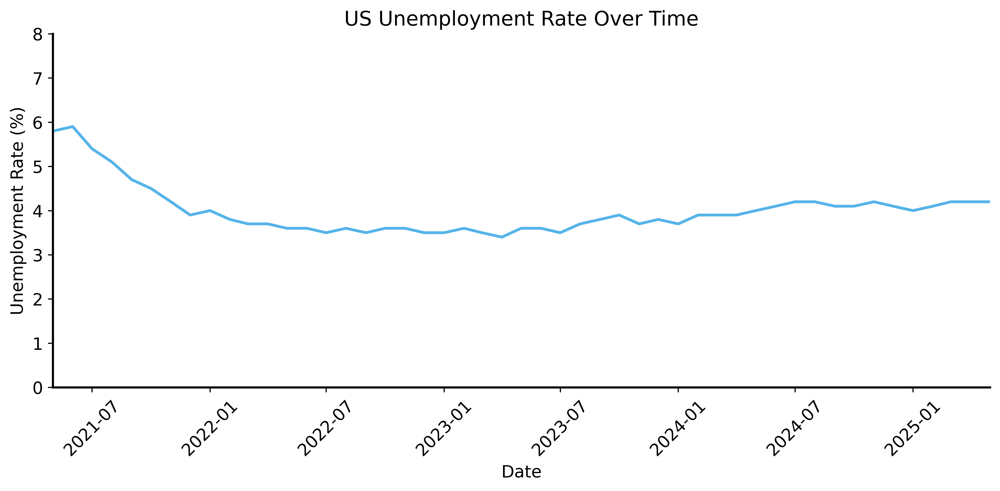
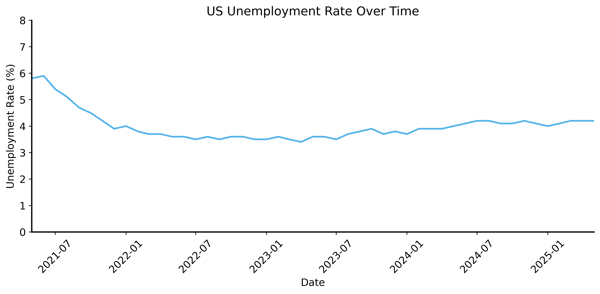
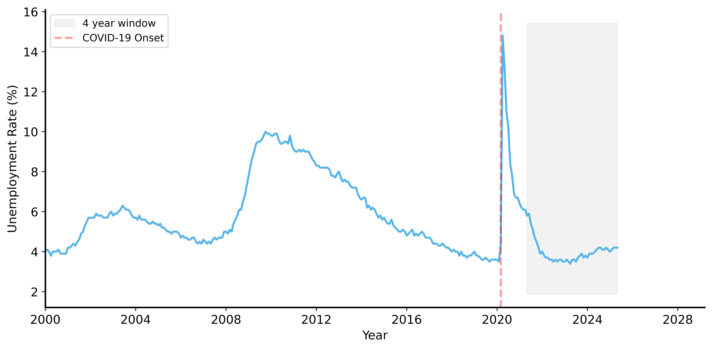
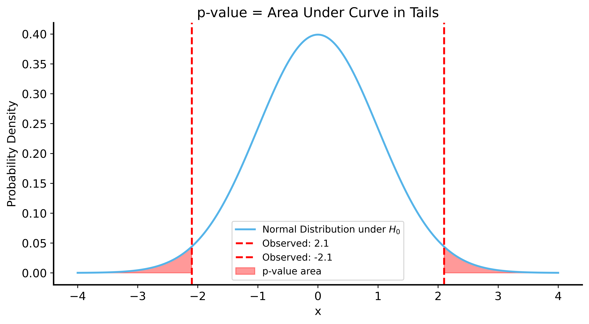
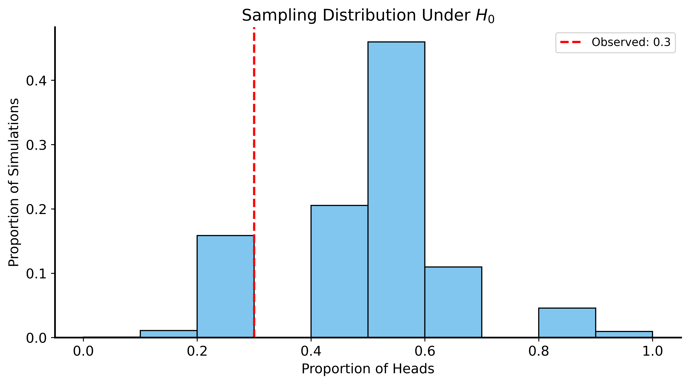
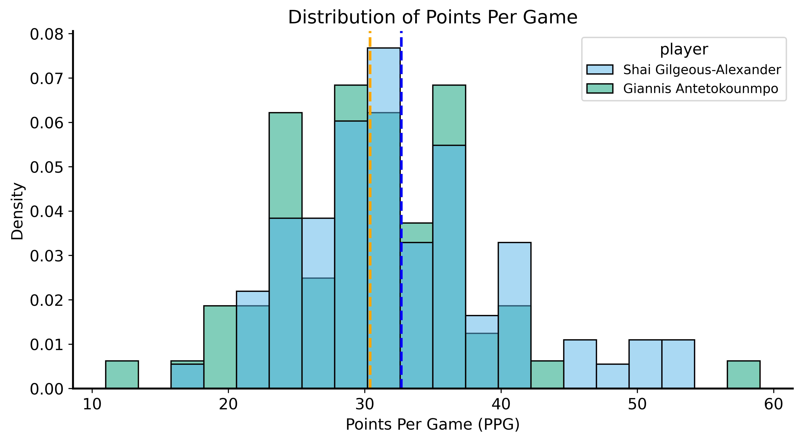
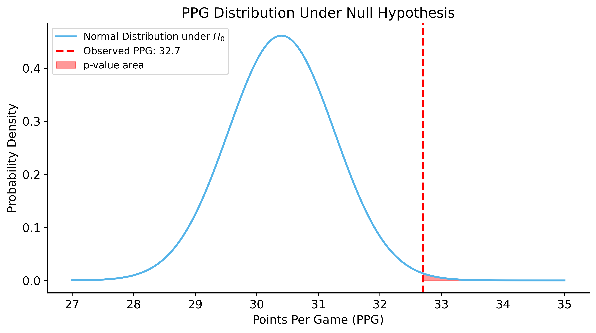

2026-01-06
Today: How to use these ideas to test claims about data
Drawing general conclusions (about a population) from specific observations (a sample)
Now that we have the building blocks, we can start making statistical inferences.
How can we use statistics to “prove” something?
People often cite data as evidence:
These statements can sound iron-clad, but they often:
A politician claims their policies reduced unemployment.
Evidence: “Unemployment rate is lower than 4 years ago”


The politician’s claim is misleading:
Key lesson: Always be skeptical about data presented as evidence
How do we know if a change is real or just random fluctuation?
The person making the claim must provide evidence.
In statistics, “beyond reasonable doubt” means:
Make claims specific and testable:
Null hypothesis (\(H_0\))
Alternative hypothesis (\(H_1\))
Definition: The probability of observing data at least as extreme as what we observed, assuming \(H_0\) is true.
If \(p\) is very small:

The p-value is compared to a threshold \(\alpha\) (your risk tolerance)
Common choice: \(\alpha = 0.05\) (5% chance of wrongly rejecting \(H_0\))
Better practice: Report the actual p-value, not just “significant” or “not”
Hypothesis testing does NOT provide absolute certainty:
Your roommate accuses you of using a rigged coin.
Can we test this claim?
This is a one-sided test — we only care if the coin favors tails.
Strategy: Simulate flipping a fair coin many times, see how often we get results as extreme as observed.
This gives us a sampling distribution under \(H_0\).
rng = np.random.default_rng(56)
n_sims = 10000
n_flips = 10
prob_heads = 0.5
proportions = []
for i in range(n_sims):
flips = rng.binomial(n=n_flips, p=prob_heads)
proportions.append(flips / n_flips)
proportions = np.array(proportions)
p_value = np.mean(proportions <= 0.3) # proportion ≤ observed
print(f"p-value: {p_value:.4f}")p-value: 0.1702
p-value ≈ 0.17 (17%)
Interpretation: Getting 3 heads in 10 flips happens ~17% of the time with a fair coin.
Verdict: Not enough evidence to support the roommate’s claim!
“Shai Gilgeous-Alexander (SGA) is the best scorer in the NBA”
This is too vague to test! Let’s make it specific:
Assumptions:
Hypotheses:
SGA: 32.68 PPG (SD: 7.54)
Giannis: 30.39 PPG
Under \(H_0\): SGA’s true scoring rate = Giannis’s observed PPG (30.4)
Question: What’s the probability SGA scores ≥32.7 PPG if his true ability is 30.4?
p-value from CLT: 0.003910
We can also simulate without assuming normality!
rng = np.random.default_rng(42)
n_sims = 5000
shai_simulated_ppg = []
for _ in range(n_sims):
low_minus_high = np.sqrt(12 * shai_sample_std**2)
simulated_scores = rng.uniform(low=30.4 - low_minus_high/2,
high=30.4 + low_minus_high/2, size=76)
simulated_ppg = np.mean(simulated_scores)
shai_simulated_ppg.append(simulated_ppg)
p_value_simulated = np.mean(np.array(shai_simulated_ppg) >= 32.7)
print(f"p-value from simulation: {p_value_simulated:.4f}")p-value from simulation: 0.0040Conclusion: Very unlikely SGA would score 32.7 PPG if his true ability was only 30.4 PPG.
Two types of errors:
| Reject \(H_0\) | Don’t Reject \(H_0\) | |
|---|---|---|
| \(H_0\) true | Type I (false positive) | ✓ Correct |
| \(H_0\) false | ✓ Correct | Type II (false negative) |
Hypothesis Testing Framework
Key Points
Confidence Intervals and Bootstrapping